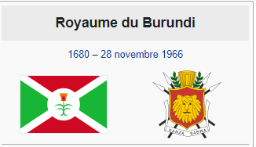

Le Royaume du Burundi, fondé probablement au XVII e siècle,
est devenu nominalement une composante de l'Afrique orientale allemande en 1890.
Après la Première Guerre mondiale, il passe sous la domination de l'Empire colonial belge,
au sein de la province du Ruanda-Urundi, elle-même intégrée au Congo belge en 1925.
Royaume du Burundi
Royaume du Burundi
,1680 – 28 novembre 1966
Drapeau Blason
Devise Dieu, le Roi et le Burundi
Description de cette image, également commentée ci-après
Situation sur une carte d'Afrique
Informations générales
Statut État indépendant (xviie siècle–1890)
Composante de l'Afrique orientale allemande (1890–1916)
Composante du Ruanda-Urundi (1916–1962)
État indépendant (1962–1966)
Capitale Muramvya
Monnaie German East African rupie (en), franc congolais, Franc du Ruanda-Urundi et Franc burundais
Entités suivantes :
République du Burundi
modifierConsultez la documentation du modèle
Le Royaume du Burundi était une entité politique gouvernée par un roi.
Son territoire correspondait à celui de l'actuel Burundi,
situé dans l'Afrique des Grands Lacs, en Afrique de l'Est.
Le royaume, à majorité Hutu, était dirigé par un monarque Tutsi, dont le titre était mwami.
Créé au xviie siècle, le royaume fut préservé durant la colonisation européenne et fut un État indépendant entre 1962 et 1966.
Histoire
La date de la fondation du royaume est inconnue mais remonte probablement au xviie siècle
lorsque les Tutsis commencèrent à dominer les Hutus, pourtant plus nombreux.
Sous la direction du roi (mwami) Ntare Ier (qui régna de 1675 à 1705),
le royaume s'étendit et annexa nombre de ses voisins1. Quoique toujours dirigé par le mwami,
le royaume était très décentralisé et les chefs régionaux jouissaient d'une large indépendance.
Avant l'arrivée des colonisateurs, les guerres de succession étaient fréquentes1.
En 1890, le Burundi devint une composante de l'Afrique orientale allemande mais
il ne fut pas effectivement occupé ou dirigé par le pouvoir colonial.
Durant la Première Guerre mondiale, les troupes belges, venues du Congo belge voisin, envahirent et occupèrent la région.
Les Belges se virent attribuer un mandat de la Société des Nations sur le Burundi et le Royaume du Rwanda ;
ils conservèrent cependant intactes un bon nombre des institutions du royaume1.
Alors que la monarchie rwandaise fut abolie par une révolution entre 1959 et 1961,
la monarchie burundaise réussit à survivre durant la période coloniale puis post-coloniale.
En 1962 le royaume du Burundi gagna à nouveau son indépendance, sous forme d'une monarchie constitutionnelle,
dans laquelle le mwami détenait le pouvoir exécutif tandis que le pouvoir législatif était confié au parlement2.
Des violences éclatèrent cependant entre la majorité Hutu et la minorité Tutsi, de 1963 à 1965 ;
elles culminèrent avec le coup d'État manqué de 1965, dirigé contre Mwambutsa IV.
Le fils de Mwambutsa IV, Ntare V, déposa son père par un coup d'État en juillet 1966,
mais fut lui-même chassé du pouvoir par un troisième coup d'État en novembre 1966,
mené par son Premier ministre, Michel Micombero, lequel abolit la monarchie2.
Postérité
La plupart[évasif] des membres de la famille royale vivent de nos jours[évasif] en exil en France.
La princesse Esther Kamatari s'est présentée à l'élection présidentielle d'août 2005 (en)3 sous l'étiquette du parti Abahuza.
Ses partisans pensent que la restauration d'une monarchie constitutionnelle pourrait aider à calmer les tensions qualifiées d'ethniques4.
Le drapeau du royaume arbore un karyenda (un tambour) en son centre, symbole de l'autorité royale5.Les premières traces archéologiques d'un État burundais remontent au xvie siècle
dans l'Est de ses frontières actuelles.
À partir de 1903, le Burundi fait partie de l'Afrique orientale allemande.
Après la Première Guerre mondiale, le pays tombe dans le giron de l'empire colonial belge
qui s'appuie sur l'aristocratie tutsi.
L'indépendance du pays est proclamée le 1er juillet 1962,
date alors choisie pour célébrer la fête nationale,
et le roi Mwambutsa IV établit un régime de monarchie constitutionnelle qui sera aboli en 1966.
« La tribu des Tutsis, qui compte pour 10 à 15 % de la population,
y domine et y dépouille de ses droits celle des Hutus,
lesquels sont cinq à six fois plus nombreux.
Le pouvoir politique central reste un monopole tutsi.
En 1987, 13 des 15 gouverneurs de provinces sont tutsis et la totalité de l'armée aussi6. »
Des heurts ont lieu entre Tutsis et Hutus dans les années 1960.
En 1972, l'insurrection des Hutus contre le régime dictatorial du président Michel Micombero
(d’origine tutsi) est durement réprimée, les massacres atteignent
plusieurs dizaines de milliers de victimes chez les Hutus (estimation : 100 000).
Articles connexes : Génocides au Burundi et Ikiza.
Les conflits latents entre Tutsis et Hutus se poursuivent dans les années 1970 et 1980
et débouchent sur la guerre civile burundaise en 1993.
Au début, des milliers de civils tutsis sont massacrés par leurs voisins hutus.
Puis, l'armée réagit très violemment comme en 1972
et engage une répression très dure et massacre des Hutus.
Au total 50 000 à 100 000 personnes (à majorité hutu) sont tuées.
Une nouvelle constitution, de transition, est promulguée le 28 octobre 2001,
établissant une alternance « ethnique » du pouvoir,
la présidence et la vice-présidence changeant tous les 18 mois, alternant Tutsis et Hutus.
L'accord d'Arusha entre en vigueur le 1er novembre 2001, mettant un terme au conflit.
Le CNDD-FDD (hutu) parvient au pouvoir en 2005 en remportant les élections législatives du 4 juillet 2005.
Lors des élections présidentielles du 19 août 2005,
l'Assemblée nationale et le Sénat réunis en congrès élisent Pierre Nkurunziza président
pour un mandat de 5 ans rééligible une seule fois.
162 parlementaires votent pour Nkurunziza, 9 contre et 2 s'abstiennent.
Ce scrutin constitue l'étape finale du processus de paix. Cinq ans plus
un congrès extraordinaire du Conseil national pour la défense de la démocratie / forces
de défense de la démocratie (CNDD-FDD) désigne le 24 avril 2010,
Pierre Nkurunziza comme candidat du CNDD-FDD pour briguer un second mandat à la tête du pays
à l'élection présidentielle du 28 juin 2010.
Des dirigeants de l'opposition sont arrêtés et cette opposition refuse de participer au scrutin.
La campagne est émaillée d'incidents, plusieurs membres de l'opposition sont arrêtés7.
Pierre Nkurunziza est réélu président avec plus de 91 % des voix, seul candidat de l'élection8.
En 2015, Pierre Nkurunziza s'impose en avril comme le candidat
du pouvoir pour l'élection présidentielle du 26 juin 2015.
Cette décision est contraire à la constitution du Burundi, promulguée en mars 2005.
Sa candidature est néanmoins validée par une décision controversée de la Cour constitutionnelle9.
Une nouvelle crise politique, émaillée à nouveau de violences, s'ouvre.
Article détaillé : Crise burundaise de 2015.
En mai 2015, une tentative de coup d'État échoue10,11,12.
Cette tentative engendre une répression sanglante de l'opposition de la part du président,
avec des centaines de morts et des centaines de milliers de Burundais se réfugiant à l'extérieur du pays13.
Après plusieurs reports, l'élection présidentielle,
jugée illégale et truquée par tous les observateurs de la politique burundaise,
se tient finalement en juillet. Le 24 juillet, la commission électorale nationale indépendante proclame Nkurunziza vainqueur avec 69,41 % des suffrages14.La situation économique continue à se dégrader.
Début 2020, le général Évariste Ndayishimiye est désigné comme
candidat pour l’élection présidentielle du 20 mai 2020 par le parti au pouvoir,
pour succéder à Pierre Nkurunziza15.
Il remporte l'élection présidentielle du 20 mai 2020,
en obtenant 68,72 % des voix et devance très largement le principal candidat de l'opposition, Agathon Rwasa,
président du Conseil national pour la liberté (CNL), qui réunit 24,19 % des voix16.
Source